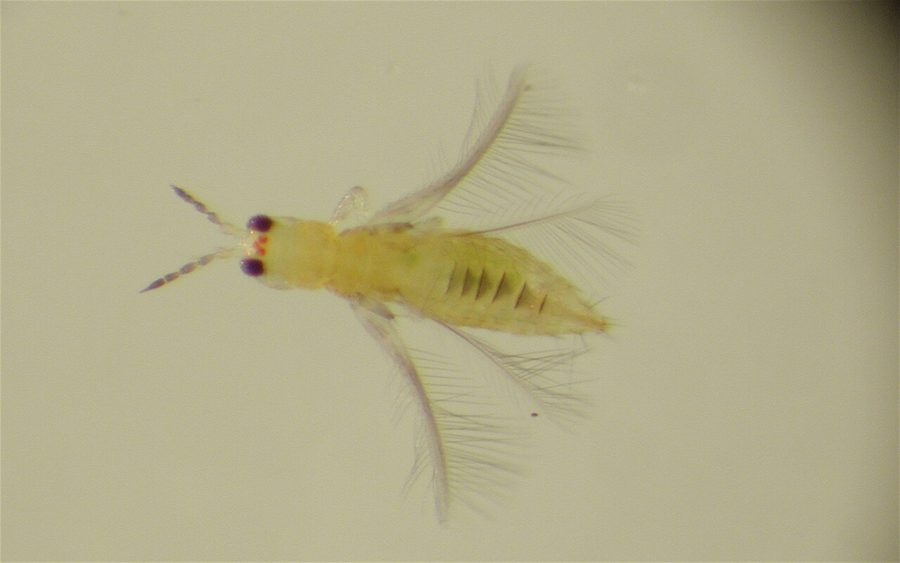

चिली थ्रिप्सChilli Thrips
Scirtothrips dorsalis · Thripidae · INS-0273

- Scientific name वैज्ञानिक नाम
- Scirtothrips dorsalis Hood, 1919
- Family कुल
- Thripidae
- Hindi हिंदी
- चिली थ्रिप्स
- Local names स्थानीय नाम
- chilli thrips
- Status here यहाँ की स्थिति
- native
- Movement आवागमन
- Resident, here all year
- Known from कहाँ दर्ज
- Others have published records from the wider Awadh–Purvanchal plain, none yet from Basti–Ayodhya अवध–पूर्वांचल से दूसरों के प्रकाशित अभिलेख, बस्ती–अयोध्या से अभी नहीं
- IUCN IUCN
- not evaluated
- Review समीक्षा
- not yet reviewed
When to look कब देखें
Present all year. साल भर मौजूद।
Uses and possibilities उपयोग और संभावनाएँ
“Traditional medicine” means a documented traditional use, not a claim that it works. Nothing on this page is medical advice.
Drawn from the documented uses in the profile below, where each is labelled traditional, current or a research lead. All uses →
Connections रिश्ते
- feeds on मिर्च · Chilli
Documented relationships from the profiles; the web grows as profiles are written.
चिली थ्रिप्स / Chilli Thrips
Scirtothrips dorsalis Hood, 1919 — Thripidae
चिली थ्रिप्स — मिर्च, शिमला मिर्च और मूंगफली की फसल का एक सूक्ष्म लेकिन अत्यधिक नुकसानदायक नाशीकीट है जिसे देहात में 'मिर्च की जूं' या 'चुर्रा-मुर्रा रोग' का कारण कहा जाता है। यह पीले रंग का अत्यंत छोटा, उड़ने वाला कीट है जिसके पंख बालों की झालर जैसे होते हैं। यह मिर्च के नए पत्तों की निचली सतह को खुरचकर उसका रस चूसता है जिससे पत्ते ऊपर की ओर मुड़कर नाव के आकार के हो जाते हैं और पौधा बौना रह जाता है।
Quick Identification त्वरित पहचान
| Feature | Description |
|---|---|
| Body form | Minute, slender, pale yellowish to straw-coloured body with dark abdominal antecostal ridges |
| Wings | Narrow, strap-like hyaline wings fringed with long, delicate, feather-like marginal setae |
| Feeding posture | Active, fast-running tiny insects found crawling on the undersides of young leaves and flower buds |
| Leaf symptom | Distinct upward curling of leaf margins ("boat-shaped" cupping) and bronzing along veins |
| Fruit damage | Scab-like brownish scarring, surface russeting, and malformation on developing chilli pods |
Minute, pale yellow, fast-moving thrips recognized by its microscopic size, fringed wings, and the characteristic upward curling, crinkling, and bronzing it produces on young chilli leaves.
Field tip: Tap a stunted, upward-curled chilli shoot over a white sheet of paper; minute, fast-crawling yellowish specks will scatter rapidly.
हिंदी: बहुत छोटा, पीले रंग का बारीक कीड़ा जो मिर्च के पत्तों के नीचे दौड़ता है। इसके रस चूसने से मिर्च के पत्ते ऊपर की तरफ मुड़कर नाव जैसे बन जाते हैं और पौधे की बढ़वार रुक जाती है।
Morphology आकारिकी
Biometrics from open entomological literature:
| Feature | Characteristic | Source |
|---|---|---|
| Body coloration | Translucent pale yellow to straw-coloured, with dark brown antecostal ridges on abdominal tergites | Literature |
| Antennae | Eight-segmented antennae, with segments one and two pale and distal segments shaded greyish | Literature |
| Wing structure | Slender, elongate wings fringed with long microtrichia along anterior and posterior margins | Literature |
| Mouthparts | Asymmetrical rasping-sucking mouthparts with single functional left mandible | Literature |
| Typical dimension | Measurement not available in consulted open sources. | Open sources |
The adult thrips is a minute, slender-bodied insect barely visible to the unaided eye. The head is wider than long, bearing red compound eyes and three ocelli. The antennae are eight-segmented, with forked sense cones on segments three and four. The pronotum is transversely striate with numerous fine discal setae. The narrow, pale wings are characteristic of Thysanoptera, lacking veins and consisting of a central membrane bordered by a dense fringe of long, delicate cilia. Abdominal tergites three through eight bear dark brown transverse antecostal lines and lateral fields of dense microtrichia. Nymphs are translucent pale yellow and wingless.
हिंदी: यह इतना छोटा होता है कि बिना लेंस के इसे देखना मुश्किल है। इसका रंग हल्का पीला होता है और इसके पंख पंखों की तरह नहीं बल्कि बारीक बालों की झालर जैसे होते हैं। इसके मुंह में पत्तों को खुरचने वाली सूंड होती है।
Behaviour & Ecology व्यवहार और पारिस्थितिकी
Both nymphs and adults exhibit thigmotactic behaviour, hiding deep inside tightly folded young terminal leaves, flower buds, and beneath the calyces of young fruits. Using their specialized asymmetrical rasping-sucking mouthparts, they lacerate the epidermal cells of tender plant tissue and suck up the oozing cellular contents. As injured cells collapse and desiccate, the damaged leaf tissue turns silvery, then bronzed, and ceases to expand normally, forcing the leaf blade to curl tightly upward. Adults are weak fliers but are carried effortlessly over vast distances on convective air currents and turbulent winds.
हिंदी: यह कीड़ा नई मुलायम कलियों और पत्तों की सिलवटों में छिपा रहता है। यह अपने मुंह से पत्तों की ऊपरी त्वचा को खुरचता है और निकलने वाला रस पीता है। घायल पत्ते सूखकर भूरे हो जाते हैं और ऊपर की ओर मुड़ जाते हैं।
Life Cycle / Phenology जीवन चक्र
Reproduces continuously throughout the year with very short generation times under warm, dry tropical weather. Unmated females produce males through arrhenotokous parthenogenesis, while mated females produce both sexes. Females insert bean-shaped microscopic eggs individually into tender leaf tissue using an internal serrated ovipositor. Eggs hatch in several days. The two active feeding nymphal instars are followed by two non-feeding resting stages (propupa and pupa) spent in leaf litter, cracks in the soil, or protected plant crevices. The entire life cycle from egg to adult is completed in two to three weeks under pre-monsoon heat.
हिंदी: तेज गर्मी और सूखे मौसम में यह बहुत तेजी से बढ़ता है और दो हफ्तों में एक पीढ़ी पूरी कर लेता है। मादा पत्तों के अंदर अंडे देती है। बच्चे रस चूसने के बाद जमीन की मिट्टी या पत्तों के कचरे में प्यूपा बन जाते हैं और फिर उड़ने वाले कीड़े बनते हैं।
Host Plants or Prey आहार
An extremely polyphagous pest recorded from over one hundred plant families. In eastern Uttar Pradesh, its primary cultivated crop host is Chilli (Capsicum annuum). Other economically important hosts include Brinjal (Solanum melongena), bell pepper, tomato, peanut (Arachis hypogaea), cotton, tea, grapevine, and mango blossoms. It also breeds abundantly on wild weeds, including tick weed (Cleome viscosa) and parthenium along field margins.
हिंदी: यह मिर्च का सबसे मुख्य शत्रु है लेकिन इसके अलावा यह शिमला मिर्च, मूंगफली, टमाटर, बैंगन और आम के बौर को भी नुकसान पहुंचाता है। फसल न होने पर यह खेतों के आसपास उगी जंगली घास पर पलता है।
Predators / Natural Enemies शत्रु
Naturally suppressed by specialized predatory mites and minute insects. Predatory anthocorid pirate bugs (Orius species) and predatory phytoseiid mites (Amblyseius species) actively patrol leaf undersides, consuming dozens of thrips nymphs daily. Predatory thrips (Aeolothrips species), green lacewing larvae, and small predatory ladybird beetles feed on exposed thrips colonies. Heavy monsoon downpours physically dislodge and drown immense numbers of nymphs on exposed foliage.
हिंदी: खेत में रहने वाले सूक्ष्म शिकारी कीड़े, विशेष रूप से ओरियस बग और शिकारी माइट्स, इसे खाकर खत्म करते हैं। इसके अलावा तेज मानसूनी बारिश की बूंदों से ये नन्हे कीड़े धुल जाते हैं और मर जाते हैं।
Agricultural / Human Relevance कृषि प्रासंगिकता
One of the most devastating pests of chilli cultivation throughout India, responsible for the severe agricultural syndrome known locally in eastern UP as 'murda disease' or 'leaf curl disease'. The combined damage of cellular sap extraction and virus transmission (such as Peanut Bud Necrosis Virus) leads to brittle, crinkled foliage, flower abortion, and severely stunted, unmarketable pods, often causing severe crop yield reductions and leaf curling. Heavy reliance on synthetic chemical insecticides has bred widespread resistance and eliminated natural predatory mites. Recommended integrated pest management focuses on installing blue and yellow sticky traps to trap dispersing adults, overhead sprinkler irrigation to wash off nymphs, spraying neem seed kernel extract (NSKE), and intercropping with barrier crops such as maize or marigold.
हिंदी: यह मिर्च की खेती में 'चुर्रा-मुर्रा' रोग का मुख्य कारण है जिससे पत्तियां नाव जैसी मुड़ जाती हैं और फूल-फल आना बंद हो जाते हैं। रासायनिक दवाओं के अंधाधुंध छिड़काव से यह दवा-रोधी बन जाता है। इससे बचाव के लिए खेत में नीले और पीले चिपचिपे कार्ड लगाने चाहिए, नीम का काढ़ा छिड़कना चाहिए और मेड़ों पर मक्का या गेंदा लगाना चाहिए।
Expected Locally स्थानीय रूप से अपेक्षित
Not a field record. Written from published accounts for eastern Uttar Pradesh. No confirmed local sighting yet — if you have seen it, that is what the atlas needs.
अभी तक स्थानीय पुष्टि नहीं। यह विवरण प्रकाशित स्रोतों से है, किसी अवलोकन से नहीं।
Ubiquitous in commercial chilli fields, vegetable market gardens, and domestic kitchen plots across eastern Uttar Pradesh. Observers in Basti and Ayodhya should examine chilli crops during the hot pre-monsoon months between March and June for upward-curling foliage.
GBIF holds published records from the wider Awadh–Purvanchal plain, none yet from Basti–Ayodhya.
A first local record for the atlas would be a clear photograph showing diagnostic features, accompanied by date, time, and precise location coordinates sent through the project's About page.
हिंदी: यह बस्ती और अयोध्या के सभी मिर्च उत्पादक क्षेत्रों में गर्मी के दिनों में आसानी से देखा जा सकता है। ऊपर की ओर मुड़े हुए मिर्च के पत्ते या पौधे की साफ फोटो खींचकर एटलस को भेजें।
Distribution वितरण
Global range: Native to South and Southeast Asia; widely introduced as an invasive pest to North America, Africa, the Caribbean, and Australia.
In India: Distributed throughout all states and union territories where chilli, peanut, and vegetables are grown.
In Uttar Pradesh: Universal across all vegetable-growing belts, particularly severe in the commercial chilli and spice districts.
In Basti district / eastern UP: Documented across all vegetable-producing blocks in eastern Uttar Pradesh based on state agricultural university extension bulletins.
हिंदी: यह भारत सहित पूरी दुनिया के गर्म देशों में पाया जाता है। उत्तर प्रदेश के सभी जिलों में जहां भी मिर्च और सब्जियां उगाई जाती हैं, वहां इसका प्रकोप रहता है।
Research Questions शोध प्रश्न
- How do blue versus yellow sticky trap heights correlate with catches of dispersing Scirtothrips dorsalis in eastern UP chilli fields?
- What density of marigold barrier borders effectively intercepts incoming thrips swarms from neighbouring infested fields? / क्या मिर्च के खेत के चारों ओर गेंदा लगाने से इस कीड़े को रोका जा सकता है?
- How does overhead sprinkler irrigation compare to surface furrow irrigation in suppressing thrips nymph survival on chilli leaves?
- A schoolchild can gently shake a curled chilli shoot over white paper to see tiny yellow insects running across the sheet / क्या कोई बच्चा सफेद कागज पर पौधे को झाड़कर इन नन्हे पीले कीड़ों को दौड़ते हुए देख सकता है?
- What local wild weed species serve as the primary viral reservoirs for thrips-transmitted tospoviruses in rural agricultural landscapes?
हिंदी: क्या फव्वारा सिंचाई से पानी छिड़कने पर यह कीड़ा पत्तों से धुल जाता है? क्या बच्चे सफेद कागज पर इसे भागते हुए देखकर पहचान सकते हैं?
Similar Species मिलती-जुलती प्रजातियाँ
| Species | How to tell apart | हिंदी |
|---|---|---|
| Thrips tabaci | Yellowish-brown polyphagous thrips lacking dark antecostal abdominal ridges; major pest of onions and alliums | प्याज का थ्रिप्स हल्का मटमैला पीला होता है और मुख्य रूप से प्याज-लहसुन पर रहता है |
| Frankliniella schultzei | Variable pale to dark brown thrips with longer pronotal setae; vectors tospoviruses in mixed crops | यह थ्रिप्स गहरे भूरे या पीले रंग का होता है और इसके सीने पर लंबे बाल होते हैं |
Field rule: Microscopic, pale yellow, fast-crawling insect with feather-fringed wings, found on leaf undersides causing upward-cupping and bronzing of chilli foliage.
हिंदी: बहुत छोटा, पीले रंग का कीड़ा जिसके पंखों पर बालों की झालर हो और जिसके रस चूसने से मिर्च के पत्ते ऊपर की ओर नाव जैसे मुड़ जाएं।
Taxonomy & Classification वर्गीकरण
Original description. Hood (1919), Insecutor Inscitiae Menstruus, vol. 7, p. 90; described under the name Scirtothrips dorsalis.
Subspecies. Monotypic species. A cryptic species complex recognized by recent molecular phylogeographic analyses.
Family and order placement. Belongs to the family Thripidae (subfamily Thripinae), suborder Terebrantia, order Thysanoptera.
Phylogenetic notes. Member of the specialized phytophagous genus Scirtothrips, characterized by dense fields of lateral microtrichia on abdominal tergites and sternites.
IUCN status rationale. Not currently evaluated on the IUCN Red List of Threatened Species.
हिंदी: इसका वैज्ञानिक विवरण हूड ने 1919 में दिया था। यह थ्रिपिडी कुल का सदस्य है और थाइसनोप्टेरा गण में आता है।
Photo Gallery फोटो गैलरी
No photos yet — add field photos to media/species/chilli_thrips/ and run node scripts/sync_photos.js.
Photos needed आवश्यक फोटो
- [ ] Microscopic view of adult showing yellow body and feather-fringed wings (वयस्क थ्रिप्स का क्लोज-अप दृश्य)
- [ ] Upward-curling and boat-shaped cupping on young chilli shoot (ऊपर की ओर मुड़ा हुआ मिर्च का पत्ता)
- [ ] Russeted and scarred damaged chilli pods (दागदार और मुड़ी हुई मिर्च की फलियां)
References संदर्भ
- Original description: Hood, J. D. (1919). On some new Thysanoptera from southern India. Insecutor Inscitiae Menstruus, 7(4–6), 90–103.
- Ananthakrishnan, T. N. (1971). Thrips (Thysanoptera) in agriculture, horticulture & forestry—diagnosis, bionomics & control. Journal of the Scientific & Industrial Research, 30(3), 113–146.
- Mound, L. A. & Palmer, J. M. (1981). Identification, distribution and host-plants of the pest species of Scirtothrips (Thysanoptera: Thripidae). Bulletin of Entomological Research, 71(3), 467–479.
- National Institute of Plant Health Management & Directorate of Plant Protection, Quarantine and Storage. (2014). AESA Based IPM Package for Chilli. Department of Agriculture & Cooperation, Ministry of Agriculture, Government of India. URL: https://niphm.gov.in/IPMPackages/Chilli.pdf.
- GBIF Occurrence Data — Scirtothrips dorsalis, India (2025).
Source file: species/fauna/insects/chilli_thrips.md